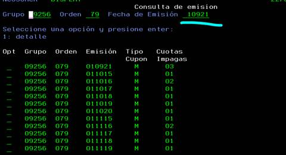
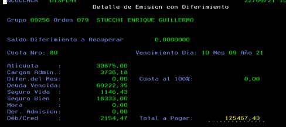

Se pueden consultar los importes emitidos con anterioridad en
AS400 | CUB | 40 Consulta de Emisiones Históricas*
Tipear grupo y orden. La fecha de emisión siempre es el primero del mes, utilizar este filtro para localizar la cuota emitida que se quiera buscar

Opción 1, despliega el detalle de la cuota emitida e importe.
